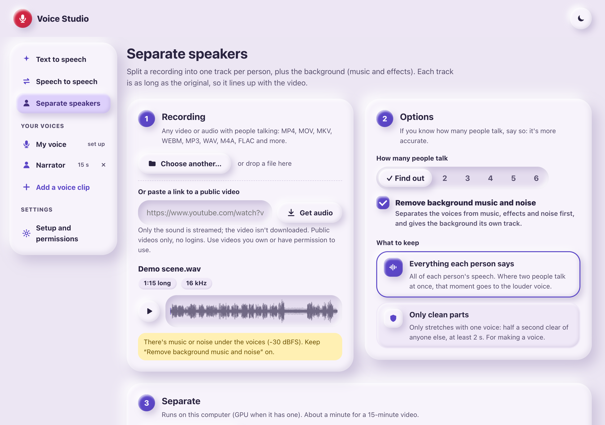
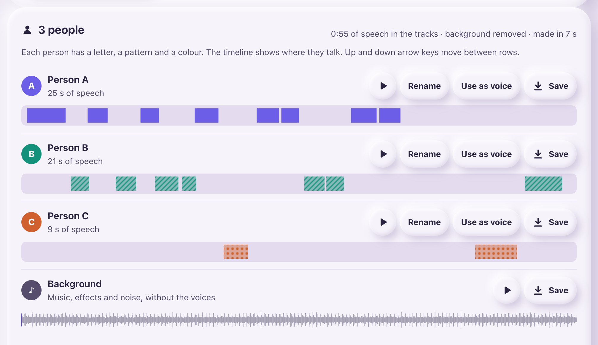
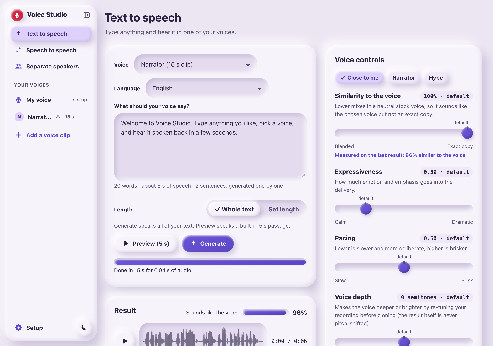
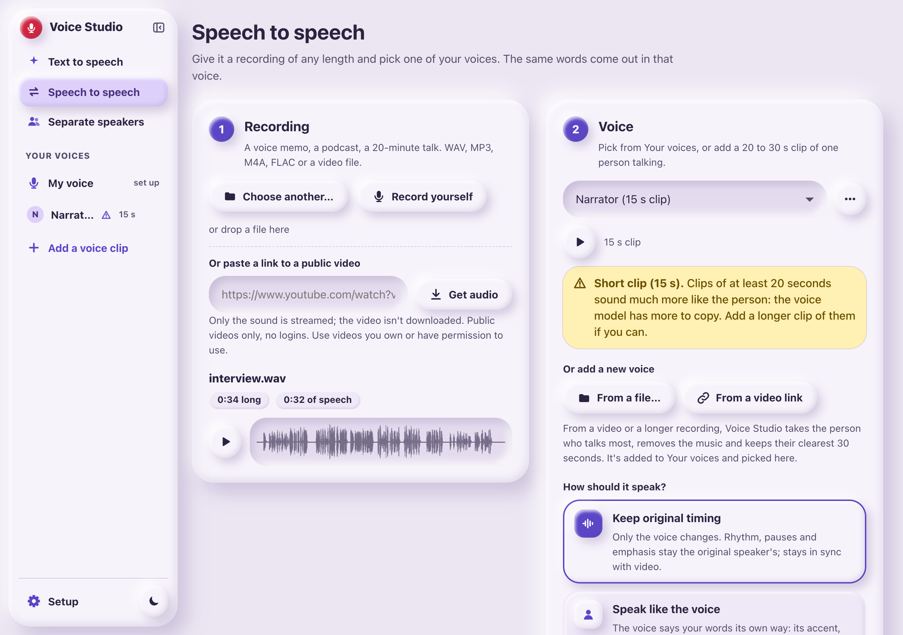
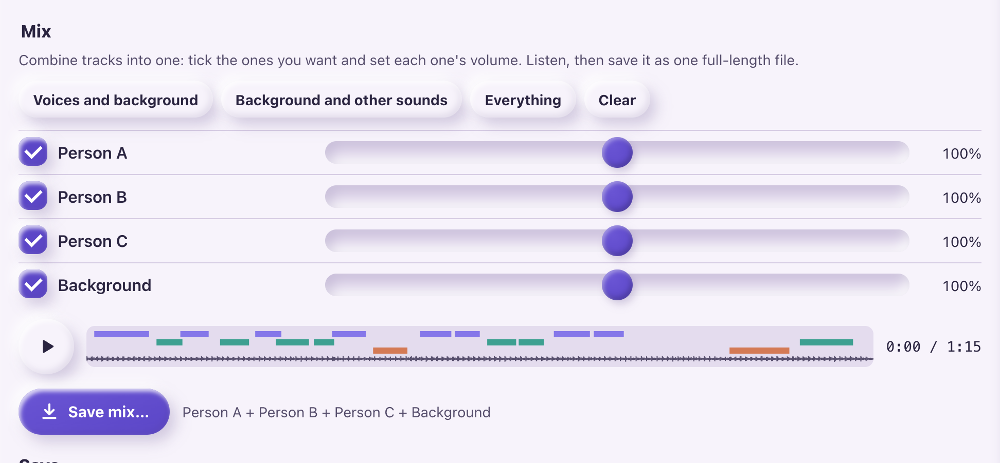
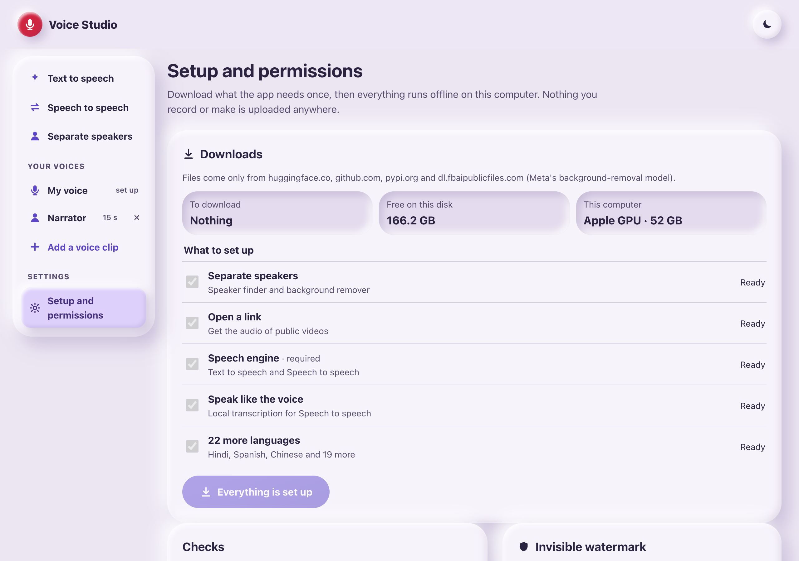

Text to speech
Type anything and hear it in one of your voices, in English or 22 other languages. Adjust expressiveness, pacing and depth, or pick a preset.
Free desktop app · runs on your computer
Type text and hear it in a voice you choose. Turn a whole recording into another voice. Take a podcast, interview or video and get a separate track for every person talking, plus the background music. Nothing you record or make is uploaded anywhere.
For Mac with Apple silicon, Windows and 64-bit Linux.

Six tools in one app, sharing one library of voices.
Type anything and hear it in one of your voices, in English or 22 other languages. Adjust expressiveness, pacing and depth, or pick a preset.
Give it a recording of any length, even 20 minutes or more. The same words come out in another voice, keeping the original timing or the new voice's own delivery.
Drop in a podcast, interview or video. Get one track per person, plus the background music and effects on their own, full length and in sync with the video.
Combine any tracks with their own volumes: one person with the background, or the scene with someone removed. Preview it, then save one file.
Record your own voice in a few minutes with guided scripts and a quality check, add short clips of voices you have permission to use, or pick anyone from a separated recording.
Paste a link to a public video instead of a file. Only the sound is streamed; the video itself is never downloaded.
Real screens from the app. Click a picture to see it full size.





Download the app (16 MB) and drag it to Applications. The first time you open it, it sets up its engine: about 1 GB, a few minutes.
Click Download everything on the Setup page. You see the size of each part and a progress bar for every file, and you can pause and resume.
Add a voice, then type, re-voice a recording, or separate a conversation. Save as WAV or MP3, wherever you like. From now on it works offline.
Version 0.1.0 · free
Apple silicon (M1 or later) · macOS 12 or later
Windows 10 and 11, 64-bit
%LOCALAPPDATA%\VoiceStudio.Uses an NVIDIA graphics card if you have one, and the processor otherwise, more slowly.
64-bit (x86-64), Ubuntu 22.04 or similar
tar -xzf Voice-Studio-linux-x86_64.tar.gz./VoiceStudio/voice-studio. The first time, it installs its engine (about 1 GB; about 3 GB with an NVIDIA graphics card, which it detects by itself) into ~/.local/share/voice-studio.Uses the processor, or an NVIDIA graphics card if you have one. Speak like the voice works on Linux too.
| Computer | Mac with Apple silicon (M1 or later), or a 64-bit Windows 10 or 11 or Linux PC. |
|---|---|
| Memory | 8 GB minimum, 16 GB or more recommended |
| Disk space | About 9 GB with every feature (the voice models are most of it) |
| Internet | Only for the one-time setup, and when you paste a video link |
| Account | None. No sign-up, no login, no key |
Voice Studio runs entirely on your computer. It has no accounts, no cloud processing and no analytics, and other devices on your network can't reach it.
It goes online only to download the models you choose, from huggingface.co, github.com, pypi.org and dl.fbaipublicfiles.com, and to stream a video link you paste.
Only use voices you own or have permission to use. Voice Studio asks you to confirm this before you start.
Every voice it creates carries an inaudible Perth watermark from the Chatterbox engine, so detection tools can tell the audio is AI-generated. It can't be heard, and it can't be turned off.
Yes. Voice Studio is free, with no account, no subscription and no limits on how much you make.
The app isn't signed with a paid Apple developer certificate yet. It's safe to open: follow the steps under How to install on a Mac (Open Anyway in Privacy & Security, or right-click → Open).
The app itself is 16 MB. On first open it installs its engine (about 1 GB). The voice models are up to about 7 GB more if you choose every feature; only the speech engine (3.2 GB) is required. You see the size of each part before anything downloads.
On a Mac with Apple silicon, a few seconds of speech take a few seconds to make, and separating a 15-minute video takes about a minute. 16 GB of memory gives the smoothest experience.
Yes. After the one-time setup everything runs offline. Only pasting a video link needs the internet.
English, plus 22 more with the optional language pack: Arabic, Chinese, Danish, Dutch, Finnish, French, German, Greek, Hebrew, Hindi, Italian, Japanese, Korean, Malay, Norwegian, Polish, Portuguese, Russian, Spanish, Swahili, Swedish and Turkish.
On test conversations of two to four people over film soundtracks, it found the right number of people every time, and about 88 % of what you hear in a person's track is that person. Where two people talk at once, that moment goes to the louder voice, and grunts or effects on top of someone's words stay in their track.
On a Mac it uses the Apple GPU. On Windows and Linux it uses an NVIDIA graphics card if you have one, and the processor otherwise, which works but is slower: a short sentence takes about 15 seconds instead of 2 or 3.